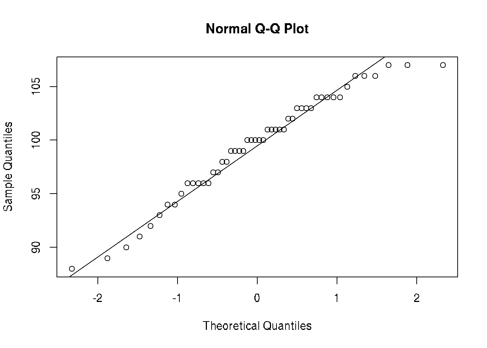

Chapter 7 Statistical distributions
7.1 Normal Distribution
x <- seq(-6, 6, length=100)
y1 <- dnorm(x, sd=1)
y2 <- dnorm(x, sd=0.5)
y3 <- dnorm(x, sd=2)
plot(x, y1,
xlim=c(-6,6), ylim=c(0,0.8),
type="l", lwd=2,
xlab="x value", ylab="Density",
main="Normal distribution")
lines(x, y2, col="red")
lines(x, y3, col="green")
legend("topright", legend=c("sd = 1", "sd = 0.5", "sd = 2"),
col=c("black", "red", "green"),
lty=c(1,1,1), lwd=2)
# Area under the curve
# For normal distribution auc = 1 (probability for all)
library(DescTools)
AUC(x, y1)## [1] 1AUC(x,y2)## [1] 1AUC(x,y3) # to broad distribution, some samples out of the area## [1] 0.99729217.2 Bernoulli Distribution
Bernoulli distribution is the discrete probability distribution of a random variable which takes the value 1 with probability p and the value 0 with probability q=1-p wiki.
Less formally, it can be thought of as a model for the set of possible outcomes of any single experiment that asks a yes–no question.
The Bernoulli distribution is a special case of the binomial distribution with n=1.
Bernoulli process, a random process consisting of a sequence of independent Bernoulli trials.
7.3 Binomial Distribution
It describes the outcome of n independent trials in an experiment. Each trial is assumed to have only two outcomes, either success or failure. If the probability of a successful trial is p, then the probability of having x successful outcomes in an experiment of n independent trials is as follows. \[f(x) = p^x(1-p)^{(n-x)}\] where x = 0,1,2,3,4,…. The binomial distribution is the basis for the popular binomial test of statistical significance.
Rules:
1. Must be a fixed number of trials.
2. Trials must be independent (the outcome of one rial does not affect the others).
3. Each trial has only two outcomes: success or failure.
4. The probability of success remains the same in all trials.
\(n\) - number of trials
\(p\) - probability of successful outcome for each trial
\(q\) - probability of failure outcome for each trial
\(x\) - number of successes
\(P(x)\) - probability of the number of successes
\(q = 1 - p\)
\(p = 1 - q\)
Example
Suppose there are twelve multiple choice questions in an English class quiz. Each question has five possible answers, and only one of them is correct. Find the probability of having four or less correct answers if a student attempts to answer every question at random.
Solution
Since only one out of five possible answers is correct, the probability of answering a question correctly by random is 1/5=0.2. We can find the probability of having exactly 4 correct answers by random attempts as follows.
dbinom(4, size=12, prob=0.2) ## [1] 0.1328756To find the probability of having four or less correct answers by random attempts, we apply the function dbinom with x = 0,…,4.
dbinom(0, size=12, prob=0.2) +
dbinom(1, size=12, prob=0.2) +
dbinom(2, size=12, prob=0.2) +
dbinom(3, size=12, prob=0.2) +
dbinom(4, size=12, prob=0.2)## [1] 0.9274445Alternatively, we can use the cumulative probability function for binomial distribution pbinom.
pbinom(4, size=12, prob=0.2)## [1] 0.9274445Tasks
60% of people who purchase sports cars are men. If 10 sports car owners are randomly selected, find the probability that exactly 7 are men (A: 0.215).
Sources
Statistics Lecture 5.3: A study of Binomial Probability Distributions
Youtube ‘Binomial distributions - Probabilities of probabilities’ at 3Blue1Brown channel part 1part 2
7.4 Beta distribution
The beta distribution is a family of continuous probability distributions defined on the interval [0, 1] parameterized by two positive shape parameters, denoted by \(\alpha\) and \(\beta\). wiki.
7.5 Geometric Distribution
In probability theory and statistics, the geometric distribution is either one of two discrete probability distributions:
- The probability distribution of the number X of Bernoulli trials needed to get one success, supported on the set { 1, 2, 3, … }
- The probability distribution of the number Y = X − 1 of failures before the first success, supported on the set { 0, 1, 2, 3, … }
wiki
\[(1 - p)^{k-1} for k trials where k \in {1,2,3,...}\] \[(1 - p)^kp for k failures where k \in {0,1,2,...}\]
7.6 Uniform Distributions
Continuous uniform distribution is a family of symmetric probability distributions. The distribution describes an experiment where there is an arbitrary outcome that lies between certain bounds.
The bounds are defined by the parameters, \(a\) and \(b\), which are the minimum and maximum values. The interval can either be closed \([a, b]\) or open \((a, b)\).
Therefore, the distribution is often abbreviated \(U(a, b)\), where \(U\) stands for uniform distribution wiki.
Probability density function:
\[ \begin{cases} \frac{1}{b - a} & \text{for} \, x \in [a,b] \\ 1 & \text{for} \, x < a \, \text{or} \, x\, > b \end{cases}\]
7.7 Poisson Distribution
Poisson distribution is a discrete probability distribution that expresses the probability of a given number of events occurring in a fixed interval of time or space if these events occur with a known constant mean rate and independently of the time since the last event. wiki Also knows as Poisson Process.
\[P(k) = e^{\lambda}\frac{\lambda^k}{k!}\]
The Poisson distribution is also the limit of a binomial distribution, for which the probability of success for each trial equals λ divided by the number of trials, as the number of trials approaches infinity.
According to the Central Limit Theorem for big \(\lambda\) the Normal distribution will be the approximation for the Poisson distribution.
Criteria of the Poisson process:
1. Events are independent of each other. The occurrence of one event does not affect the probability another event will occur.
2. The average rate (events per time period) is constant.
3. Two events cannot occur at the same time.
Models:
- Number of calls per minute in a call center.
- Number of decay events that occur from a radioactive source in a given observation period.
- The number of meteorites greater than 1 meter diameter that strike Earth in a year.
- The number of patients arriving in an emergency room between 10 and 11 pm.
- The number of laser photons hitting a detector in a particular time interval.
Example:
12 cars cross the bridge in 1 min in average. What is the probability that 17 or more cars will cross the bridge?
ppois(16, lambda=12, lower=FALSE)## [1] 0.101291# simulate Poisson
x <- rpois(n = 10000, lambda = 3)
hist(x)
# Calculate the probability of break-even
mean(x >= 15)## [1] 07.8 Exponential Distribution
Exponential distribution is the probability distribution of the time between events in a Poisson point process, i.e., a process in which events occur continuously and independently at a constant average rate. wiki
\[P(x) = \lambda e ^{ - \lambda x }\]
It is a particular case of the gamma distribution.
Suppose the mean checkout time of a supermarket cashier is 3 minutes. Find the probability of a customer checkout being completed by the cashier in less than 2 minutes.
pexp(2, rate=1/3)## [1] 0.48658297.9 Chi-squared Distribution
In probability theory and statistics, the \(\{chi}^2\) distribution with k degrees of freedom is the distribution of a sum of the squares of \(k\) independent standard normal random variables. wiki If \(X_1,X_2,…,X_m\) are \(m\) independent random variables having the standard normal distribution, then the following quantity follows a Chi-Squared distribution with \(m\) degrees of freedom. Its mean is \(m\), and its variance is \(2m\).
\[V = X_1^2 + X_2^2 + ... + X_m^{2} \tilde{} X_{(m)}^2\]
Summ of squares of standard normal, independen random variables are distributed according to the chi-square distribution with k degrees of freedom, where k is the number of random variables being summed.
Chi-squared distribution applications:
* Chi-square test of independence in contingency tables
* Chi-square test of goodness of fit of observed data to hypothetical distributions
* Likelihood-ratio test for nested models
* Log-rank test in survival analysis
* Cochran–Mantel–Haenszel test for stratified contingency tables
x = seq(0,25, length=100)
v = dchisq(x, df=7)
plot(x,v, type='l')
# quantiles of chi-squared
q = c(.25, .5, .75, .999)
qchi = qchisq(q, df = 7, lower.tail = TRUE)
abline(v=qchi, lty=2, col='red')
qchi## [1] 4.254852 6.345811 9.037148 24.321886Sources
Seven Must-Know Statistical Distributions and Their Simulations for Data Science
Probability distributions
Hartmann, K., Krois, J., Waske, B. (2018): E-Learning Project SOGA: Statistics and Geospatial Data Analysis. Department of Earth Sciences, Freie Universitaet Berlin.